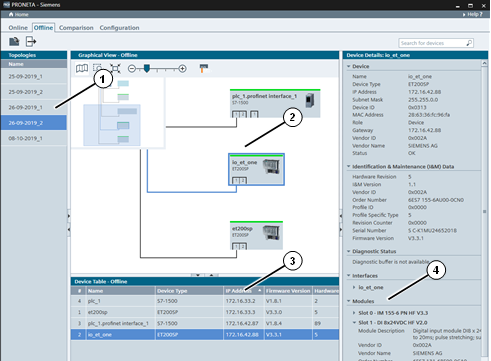
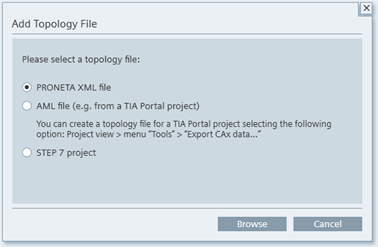

图标
名称
功能

添加拓扑文件
将之前存储的拓扑添加到拓扑列表中。

导出拓扑
对硬盘执行拓扑导出。
PRONETA Basic 的网络分析可帮助用户快速了解 PROFINET 网络中安装的设备及其彼此互连的方式。“网络分析”(Network Analysis) 还允许用户查看和更改设备的各种网络参数，如 IP 地址、设备名称等。
可以将不同的网络相互比较，并且可以自动或手动组态设备。
在离线模式下，用户可检查之前存储到磁盘的参考网络，与在线模式下的检查方式相同。顾名思义，主要区别在于离线模式严格限制为读取操作，始终不会写入设备。

主画面分为：
之前存储的参考网络的 拓扑列表 (1)
图形视图 (2)，以及
设备列表和 设备详细信息 (4) 与在线模式中使用的设备列表和设备详细信息视图类似，这些视图提供有关所选拓扑中存储的设备的信息。
功能栏
功能栏中提供以下功能：
|
图标 |
名称 |
功能 |
|
|
添加拓扑文件 |
将之前存储的拓扑添加到拓扑列表中。 |
|
|
导出拓扑 |
对硬盘执行拓扑导出。 |
可使用以下三种格式之一将拓扑从存储介质加载到 PRONETA Basic：
导入为之前从 PRONETA Basic 存储的 XML 文件
导入为使用 TIA Portal 创建的 AML 文件
导入为 STEP 7 项目（版本 V5.4、V5.5 或 V5.6）

在“添加拓扑文件”(Add Topology File) 对话框中，选择要加载的拓扑文件类型，然后单击“浏览”(Browse) 以在存储介质中搜索相应的拓扑。
在使用 AML 文件时，请注意如下事项：
|
注意 |
在当前版本中 (TIA Portal V15.1)，TIA Portal 仅执行受限制的 AML 导出。
|
拓扑列表
在此窗口中显示存储的网络拓扑的列表。通过功能栏中的命令添加更多拓扑。
要删除条目，请右键单击列表并应用“删除文件”(Remove File) 命令。
从列表中选择条目将在“图形视图”(Graphical View) 中显示此拓扑。
图形视图
“图形视图”(Graphical View) 是 PROFINET 网络的一种图形显示形式。有关其操作的详细信息，请参见在线模式下的 图形视图。
右键单击“图形视图”(Graphical View) 或“设备表”(Device Table) 中的设备，将显示 设备快捷菜单。
工具栏
在“图形视图”(Graphical View) 顶部有一个带有各种功能图标的工具栏：
|
图标 |
名称 |
功能 |
|
|
显示拓扑的概览 |
在“在线视图”(Online View) 中切换拓扑概况。（参见 拓扑概况) |
|
|
缩放选择 |
可使用此工具在“图形视图”(Graphical View) 中绘制一个矩形。释放鼠标按钮后，视图便会缩放以显示矩形区域。 |
|
|
根据画面大小进行缩放 |
将视图缩放到所有网络设备都适合显示在视图内的大小。 |
|
|
缩放条 |
可向左或向右拖动手柄或单击“-”或“+”放大或缩小网络。（还可以通过将鼠标置于视图上并使用鼠标滚轮来放大和缩小图形视图。） |
|
显示物理连接类型 |
不同的颜色表示不同的传输介质。（请参见 设备连接类型 ) |